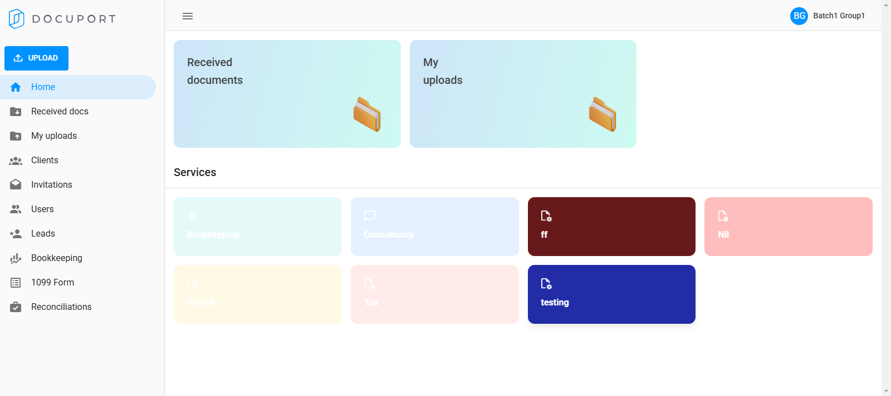
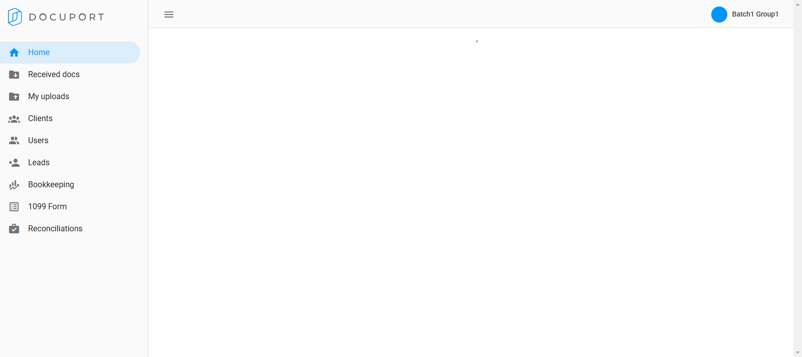
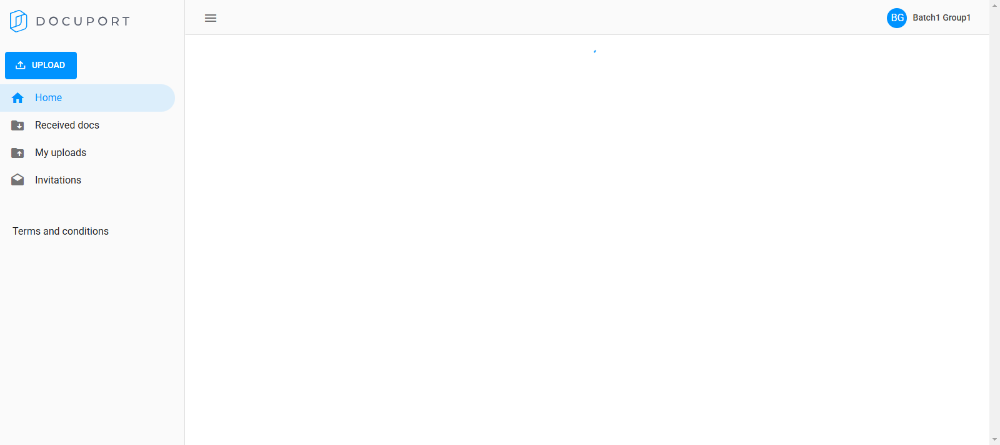

-
Docuport Login Logout
1:50:13 PM / 00:00:19:269 Fail
Docuport Login Logout
03.15.2025 1:50:13 PM 03.15.2025 1:50:32 PM 00:00:19:269 · #test-id=1FailLogin as different user rolesFailLogin as different user rolesGiven user is on Docuport login pageGiven user is on Docuport login pageWhen user unters credential as a "advisor"And user clicks login buttonThen user should be able to see the home for "advisor"Step skippedio.docuport_g1.step_definitions.Hook.tearDown(io.cucumber.java.Scenario)Login as different user rolesFailLogin as different user rolesGiven user is on Docuport login pageGiven user is on Docuport login pageWhen user unters credential as a "supervisor"And user clicks login buttonThen user should be able to see the home for "supervisor"Step skippedio.docuport_g1.step_definitions.Hook.tearDown(io.cucumber.java.Scenario)Login as different user rolesFailLogin as different user rolesGiven user is on Docuport login pageGiven user is on Docuport login pageWhen user unters credential as a "client"And user clicks login buttonStep skippedThen user should be able to see the home for "client"Step skippedio.docuport_g1.step_definitions.Hook.tearDown(io.cucumber.java.Scenario)Login as different user rolesFailLogin as different user rolesGiven user is on Docuport login pageGiven user is on Docuport login pageWhen user unters credential as a "employee"And user clicks login buttonThen user should be able to see the home for "employee"Step skippedio.docuport_g1.step_definitions.Hook.tearDown(io.cucumber.java.Scenario)Login as different user roles
-
org.openqa.selenium.StaleElementReferenceException
4 tests
org.openqa.selenium.StaleElementReferenceException
4 failedStatus Timestamp TestName Fail 13:50:17 PM And user clicks login button Docuport Login Logout.Login as different user roles.And user clicks login buttonFail 13:50:24 PM And user clicks login button Docuport Login Logout.Login as different user roles.And user clicks login buttonFail 13:50:27 PM When user unters credential as a "client" Docuport Login Logout.Login as different user roles.When user unters credential as a "client"Fail 13:50:31 PM And user clicks login button Docuport Login Logout.Login as different user roles.And user clicks login button
-
@loginlogout
4 tests
@loginlogout
4 failedStatus Timestamp TestName Fail 13:50:13 PM Login as different user roles Docuport Login Logout.Login as different user rolesFail 13:50:18 PM Login as different user roles Docuport Login Logout.Login as different user rolesFail 13:50:24 PM Login as different user roles Docuport Login Logout.Login as different user rolesFail 13:50:28 PM Login as different user roles Docuport Login Logout.Login as different user roles
Started
Mar 15, 2025 01:50:12 PM
Ended
Mar 15, 2025 01:50:32 PM
Features Passed
0
Features Failed
1
Features
Scenarios
Steps
Timeline
Tags
| Name | Passed | Failed | Skipped | Others | Passed % |
|---|---|---|---|---|---|
| @loginlogout | 0 | 4 | 0 | 0 | 0% |